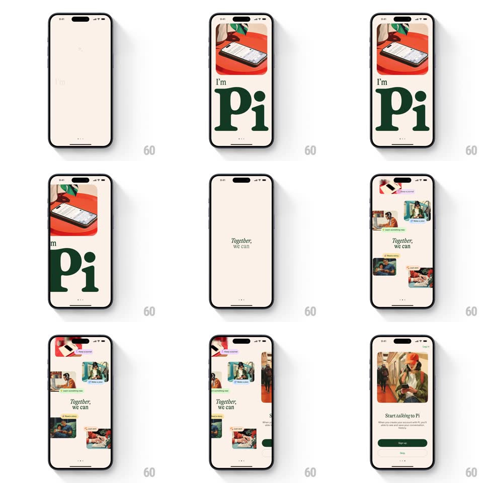

Media
Frame-by-frame

Rebuild this animation 1:1: Pi's onboarding slideshow - cream pages pairing a floating product photo card with giant serif type ("I'm Pi"), swiping between editorial beats.

Rebuild this animation 1:1: Pi's onboarding slideshow - cream pages pairing a floating product photo card with giant serif type ("I'm Pi"), swiping between editorial beats.
## Integration
Integration: stack-agnostic spec - springs given as stiffness/damping, timed motions as duration + curve; map every value to your framework and animation library of choice.
## Scene
Cream pages. The hero page: a rounded photo card (phone on a red table) floating at the top, a small italic "I'm", and a giant dark-green serif "Pi" dominating the lower half; pagination dots at the bottom. Later beats (e.g. "Together,") keep the same editorial type system.
## Motion spec
Pattern: staggered editorial page reveals + swipe slideshow.
- Page entry: the photo card drops in from above with a soft bounce (translateY -60px to 0, spring ~300/20, rotate -3deg to 0), then the italic kicker fades in (250ms), then the giant serif word rises (translateY 30px + fade, 400ms, slight spring), then the pagination dots fade (200ms).
- The photo card idles with a gentle float (translateY +-4px, 4s loop) after landing.
- Swipe: pages track the finger 1:1; the outgoing page's giant word parallaxes faster than the card (word 1.2x, card 0.8x) creating depth; release snaps to the nearest page (spring ~360/24).
- Page transitions also crossfade the background tint slightly (cream shifts a few percent warmer/cooler per page).
- Pagination dots: the active dot stretches (width 6px to 16px, 200ms spring) as pages change.
## Calibration
- The serif word is enormous - roughly a third of screen height; don't shrink it to fit copy blocks.
- Only one idea per page: kicker + one word or short phrase.
## Reduced motion
Pages crossfade; card doesn't float.
## Don't miss
- The palette is cream, dark green, and the photo's red - no other colors.
- The italic kicker ("I'm", "Together,") is small and quiet, deliberately dwarfed by the serif word beneath it.